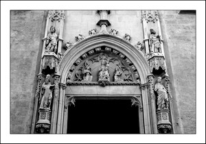

Puerta de acceso a la iglesia
Iglesia de Sant Miquel
La iglesia de San Miguel da nombre a la calle y cuyo nombre proviene del dominico fray Miquel Fabra, confesor de Jaime I. Se erigió sobre una antigua mezquina en el siglo XIV, reformándolo ampliamente en 1632, y según cuentan en ella se realizó la primera misa cristiana tras la toma de Medina Mayurqa por parte de Jaime I.